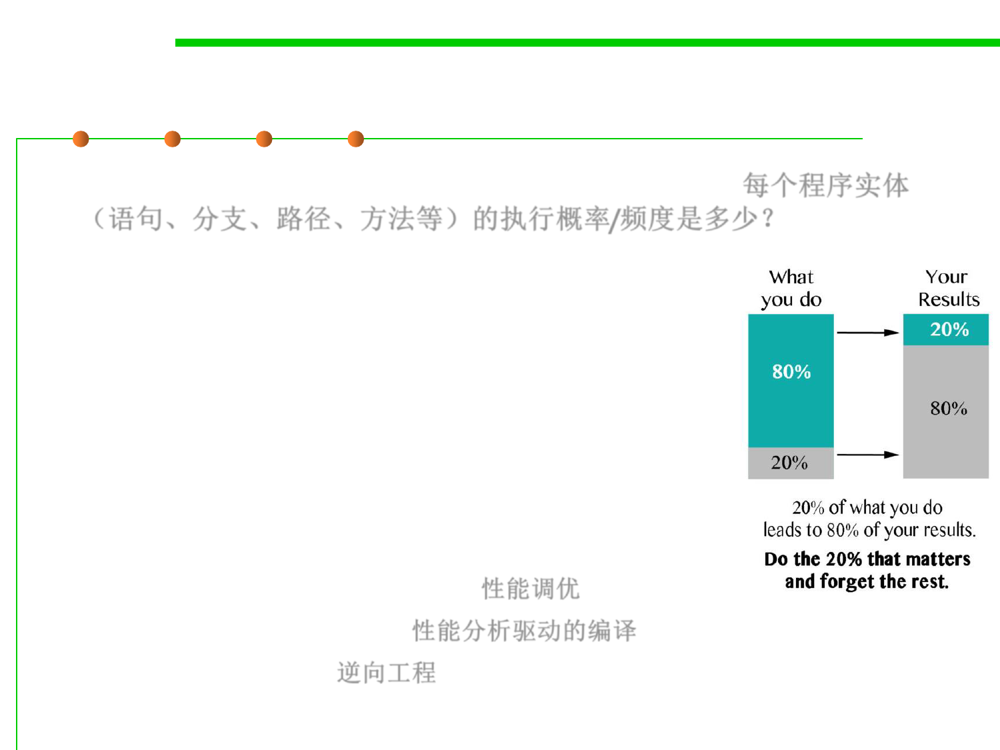

8.2 Dynamic Program Analysis Methods and Tools
Example 1: Program Hot Spots 程序热点
▪ How frequently does each program entity execute? 每个程序实体
（语句、分支、路径、方法等）的执行概率/频度是多少？
– Procedures, methods, statements, branches, paths
– By statistics on multiple executions of the program
▪ 80-20 rule
– 20% of program responsible for 80% of execution time
▪ Objectives:
– Applications Performance tuning 性能调优
– Profile-driven compilation 性能分析驱动的编译
– Reverse engineering 逆向工程